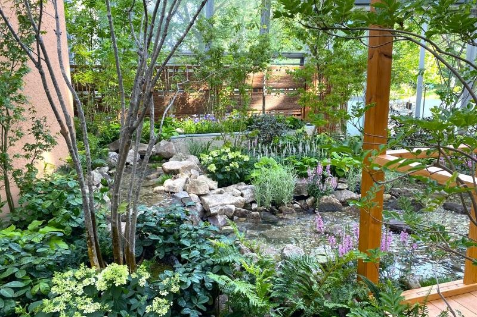
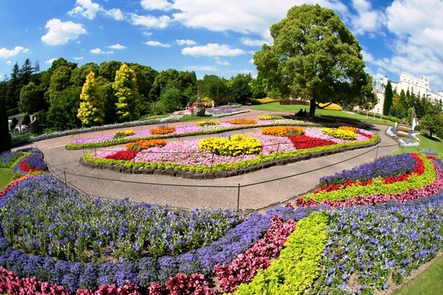

ガーデン

夏季限定 アジアンリゾートガーデン
開催期間：5月31日～9月29日
ヤシ、ラン、クロサンドラなどの熱帯植物が楽しめる、東南アジアのリゾートをイメージしたガーデンです。
7月9日〜9月1日はウツボカズラやハエトリソウなどの食虫植物も展示され、 7月16日〜8月26日の夏休み期間にはドラゴンのトピアリー 「ミドラ」が登場！写真映えするスポットとしても大人気です。

夏季限定 シェードガーデン～納涼の庭～
開催期間：7月11日～9月8日
日陰でも元気に育つ植物に囲まれた、涼やかな夏のガーデンです。
流れる水音と風鈴の心地よい音色、緑あふれる空間で癒しのひとときをお過ごしください。
涼しい風が通るベンチもあり、夏の散策途中にぴったりの休憩スポットです。

ヨーロッパ風お花畑
ヨーロッパの花の公園花壇をお手本にした、四季を通じて美しい一年草花壇です。
現在、ここでは、夏花壇の主役「ランタナ」が色とりどりに咲き誇っています。
花に囲まれたひとときを、写真や思い出に残してみてください。